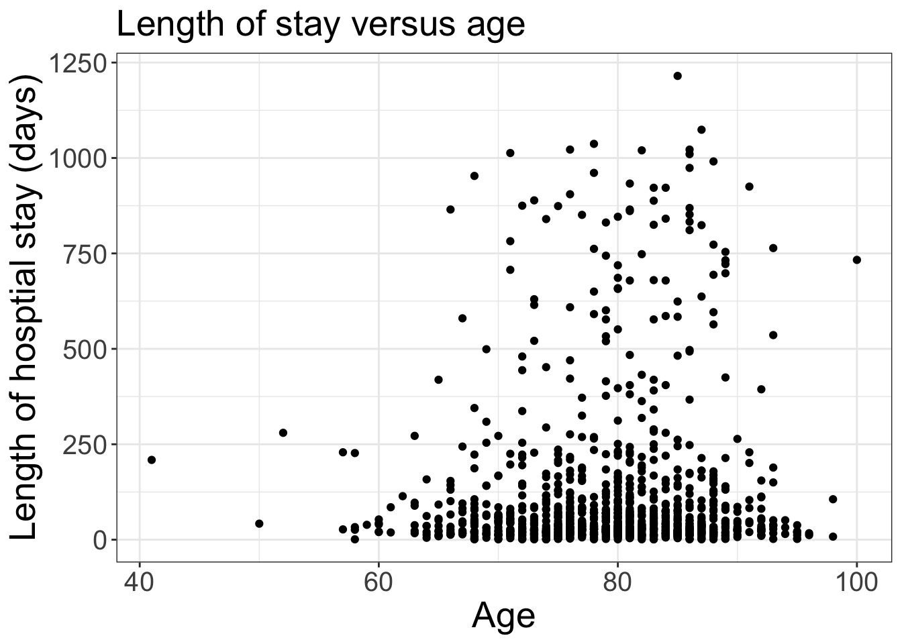
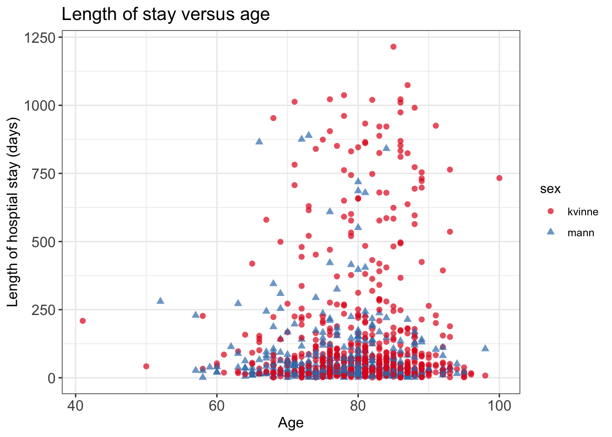
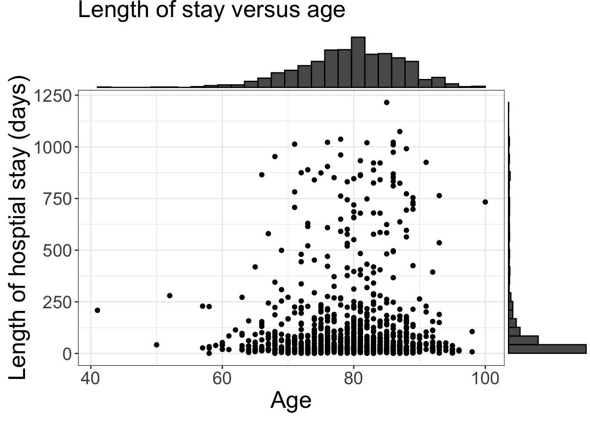
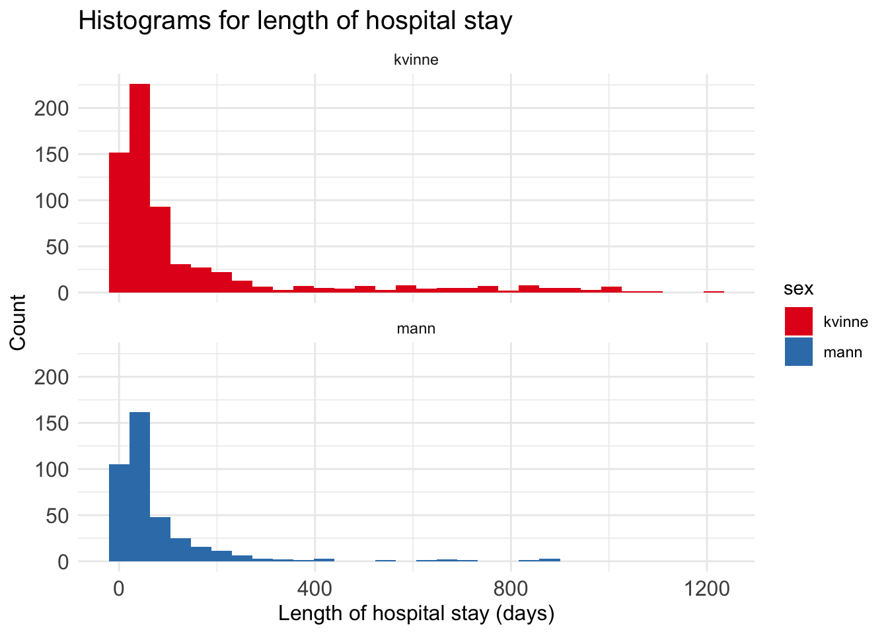
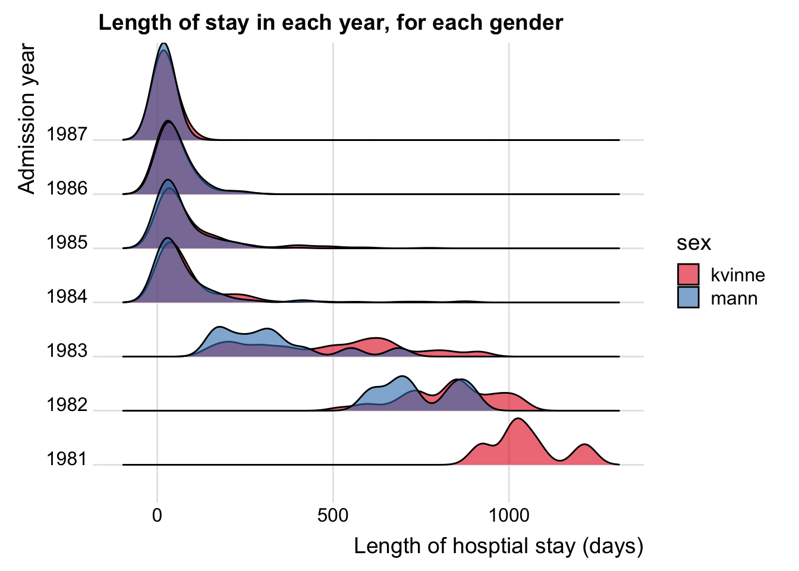
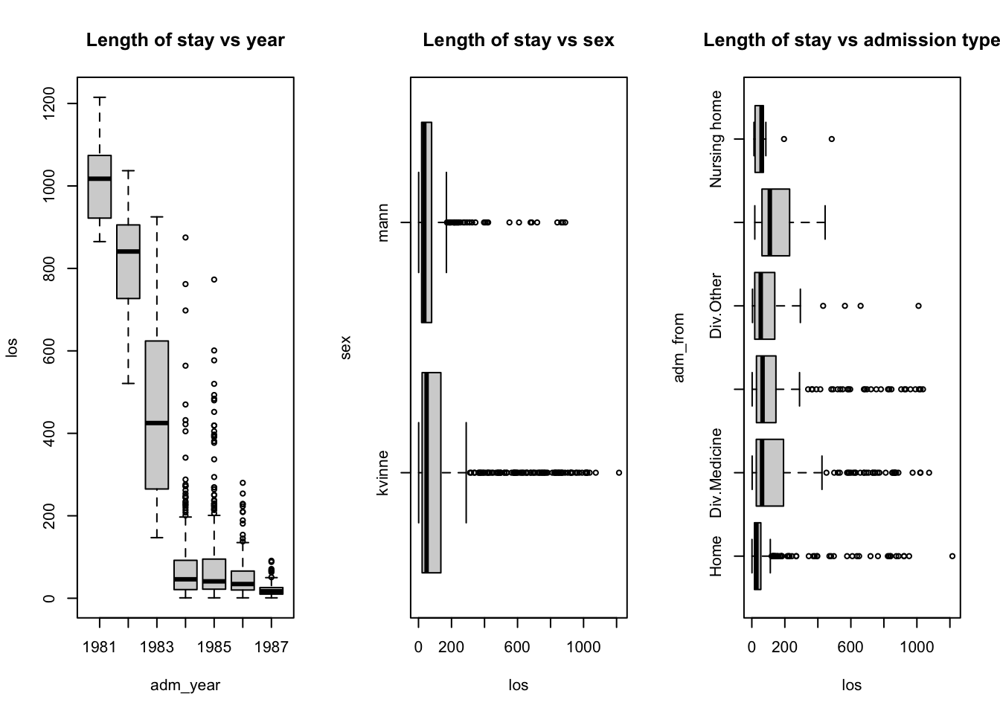
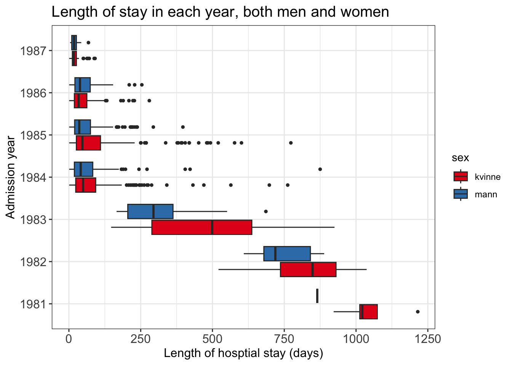
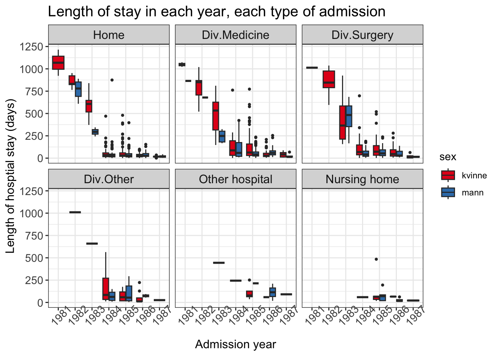

In the previous section (EDA Part I), we have introduced some basic manipulation, where we focused mostly on 1 or 2 variables.
In this part, we will introduce how to
select multiple columns from a data frame (base R and tidyverse);
assign new column names for variables (base R and tidyverse);
explore a dataset with slightly more advanced visualization using ggplot.
Tidyverse is a collection of R packages for data manipulation and visualization. It is widely used in the R community, both in academia and industry.
This course is introductory statistics where statistical methodology is the focus. However, we think that exploratory data analysis (EDA) and an intuitive way of understanding of your data is crucial for selecting the correct method; that is why we have this section.
Do I need to learn tidyverse and ggplot?
Tidyverse data manipulation and ggplot are for slightly more experienced R users; no, you do not need them for your home exam.
If you are new to R, focus on base R functions and plots (scatter, boxplot, histogram, qqplot).
Explore dataset: length of hospital stay
The data liggetid was collected at the Geriatric Department at Ullevål Sykehus. For a complete description of the variables, please refer to Exercise 2 in Non-parametric tests.
We will focus on the following variables:
Year of hospital admission (innaar)
Gender, men and women (kjoenn)
Admission from, where 1 = home, 2 = Div. of Medicine, 3 = Div. of Surgery, 4 = Other division, 5 = Other hospital, 6 = Nursing home (kom_fra)
Stroke, where 1 = yes, 0 = no (slag)
Age (alder)
Hospital stay, in days (liggetid)
We will first select a subset of the variables above from the original dataset, rename the variables, filter (to extract rows or subjects from) the dataset based on one or several conditions; and then introduce some advanced visualization techniques as part of the exploration (not required in home exam).
adm_year age sex adm_from stroke los
1 1987 81 kvinne 1 0 13
2 1987 96 kvinne 1 0 17
3 1987 79 kvinne 1 0 6
Filter data
Filtering a dataset is a very common task in data analysis. It is often the case where you need to filter based on gender, a certain range of values or combined.
Note that with base R filtering, you need to call the variable in this way: data$variable (e.g. data_los$sex). If you want to avoid this, you can try the tidyverse solution (next section).
# base R filtering needs you to use data$variable inside the square bracket# filter based on sex == kvinnedsex_kvinne <- data_los[data_los$sex =='kvinne', ]# dsex_kvinne # print out yourself to see the outcome!# based on length of stay over 1000data_los[data_los$los >1000, ]
# stroke has some NA, let us examine thosedstroke_na <- data_los[is.na(data_los$stroke), ]# dstroke_na # print out yourself to see the outcome!# combine multiple conditions with &data_los[data_los$adm_year ==1986& data_los$age >80& data_los$sex =='mann'& data_los$los >100, ]
adm_year age sex adm_from stroke los
366 1986 87 mann 2 NA 214
399 1986 82 mann 2 NA 123
408 1986 93 mann 2 NA 170
552 1986 82 mann 3 0 138
583 1986 86 mann 3 0 135
Tidyverse and data.table
Tidyverse is a collection of R packages that are very useful for data manipulation and visualization. Packages such as dplyr, tidyr, ggplot2 are all part of tidyverse.
data.table is an R package (and a data format) that facilitates large dataset manipulation; however there are some useful syntax that are handy for small datasets as well.
In this section we will load the packages via library(package_name).
Learning tidyverse
As tidyverse is a complex ecosystem for R packages, we are not going to cover the details; rather, we recommend that you try to install the packages and run the code in this section.
To install an R package (such as ggplot2), type install('ggplot2') in the console.
Use setnames(data, oldname, newname) (from data.table package) to change variable names one by one.
# rename# note: you can also use the base R way heresetnames(data_los2, old ='innaar', new ='adm_year')setnames(data_los2, old ='alder', new ='age')setnames(data_los2, old ='kjoenn', new ='sex')setnames(data_los2, old ='kom_fra', new ='adm_from')setnames(data_los2, old ='slag', new ='stroke')setnames(data_los2, old ='liggetid', new ='los')head(data_los2, 3)
adm_year age sex adm_from stroke los
1 1987 81 kvinne 1 0 13
2 1987 96 kvinne 1 0 17
3 1987 79 kvinne 1 0 6
Filter data with dplyr
The benefit of using the filter function from dplyr package is that you do not need to use the $ anymore:
# filter based on sex == kvinnedsex_kvinne2 <-filter(data_los2, sex =='kvinne')# dsex_kvinne2 # print out yourself to see what happened here# based on length of stay over 1000filter(data_los2, los >1000)
# combine multiple conditions with &# admission year 1986, age greater than 80, sex mannfilter(data_los2, adm_year ==1986& age >80& sex =='mann'& los >100)
adm_year age sex adm_from stroke los
1 1986 87 mann 2 NA 214
2 1986 82 mann 2 NA 123
3 1986 93 mann 2 NA 170
4 1986 82 mann 3 0 138
5 1986 86 mann 3 0 135
Visualization with ggplot2
## Data processing
It is usually required to pre-process the data before visualization.
We know that there are some missing values, so we can remove them now (with filter).
Some variables also need to be re-coded so that they display nicely in the plot. For example, we can code adm_from (admission from) with text.
# can make some customizations: change titles, bigger fontsplt_scat <- plt_scat +labs(x ='Age', y ='Length of hosptial stay (days)', title ='Length of stay versus age')plt_scat <- plt_scat +theme_bw() # make white backgroundplt_scat <- plt_scat +theme(axis.text =element_text(size =15),axis.title =element_text(size =20), plot.title =element_text(size =20))plt_scat

You can add more information in the plot, with colors and shapes.
# can add on more information: colorplt_scat2 <-ggplot(data = data_los, mapping =aes(x = age, y = los, shape = sex, color = sex))plt_scat2 <- plt_scat2 +geom_point(size =2, alpha =0.7)# customizeplt_scat2 <- plt_scat2 +labs(x ='Age', y ='Length of hosptial stay (days)', title ='Length of stay versus age')plt_scat2 <- plt_scat2 +theme_bw() # make white background# change text sizeplt_scat2 <- plt_scat2 +theme(axis.text =element_text(size =12),axis.title =element_text(size =12), plot.title =element_text(size =15))# change colorplt_scat2 <- plt_scat2 +scale_color_brewer(palette ='Set1')plt_scat2

You can also use R packages beyond the tidyverse, to add histograms on top of the scatter plot.
# can add histogram on toplibrary(ggExtra)ggMarginal(plt_scat, type ='histogram')

Histogram
plt_hist <-ggplot(data = data_los, mapping =aes(x = los, fill = sex))plt_hist <- plt_hist +geom_histogram() plt_hist <- plt_hist +facet_wrap( ~ sex, ncol =1)# some customizationplt_hist <- plt_hist +theme_minimal() # make minimal background# change axisplt_hist <- plt_hist +labs(x ='Length of hospital stay (days)', y ='Count', title ='Histograms for length of hospital stay')# change text sizeplt_hist <- plt_hist +theme(axis.text =element_text(size =12),axis.title =element_text(size =12), plot.title =element_text(size =15))# change colorplt_hist <- plt_hist +scale_fill_brewer(palette ='Set1')plt_hist
`stat_bin()` using `bins = 30`. Pick better value with `binwidth`.

You can plot a few histogram (or density) in the same plot.
library(ggridges)plt_ridge <-ggplot(data = data_los, mapping =aes(x = los, y = adm_year, fill = sex))plt_ridge <- plt_ridge +geom_density_ridges(alpha =0.6) plt_ridge <- plt_ridge +theme_ridges()plt_ridge <- plt_ridge +labs(x ='Length of hosptial stay (days)', y ='Admission year', title ='Length of stay in each year, for each gender')# change colorplt_ridge <- plt_ridge +scale_fill_brewer(palette ='Set1')plt_ridge
Picking joint bandwidth of 32.7

Box plot
# we try to plot length of stay versus year, and potentially sex and adm type# base R is limited in this regardpar(mfrow =c(1, 3))boxplot(los ~ adm_year, data = data_los, main ='Length of stay vs year')boxplot(los ~ sex, data = data_los, horizontal = T, main ='Length of stay vs sex')boxplot(los ~ adm_from, data = data_los, horizontal = T,main ='Length of stay vs admission type')

# ggplot can make more flexible plots# add color plt_box <-ggplot(data = data_los, mapping =aes(x = adm_year, y = los, fill = sex))plt_box <- plt_box +geom_boxplot(outlier.size =1)# plt_box <- plt_box + facet_wrap( ~ sex)plt_box <- plt_box +coord_flip()# customizeplt_box <- plt_box +theme_bw() # make white backgroundplt_box <- plt_box +labs(x ='Admission year', y ='Length of hosptial stay (days)', title ='Length of stay in each year, both men and women')plt_box <- plt_box +theme(axis.text =element_text(size =12),axis.title =element_text(size =12), plot.title =element_text(size =15), strip.text =element_text(size =12))plt_box <- plt_box +scale_fill_brewer(palette ='Set1')plt_box

# add even more information plt_box2 <-ggplot(data = data_los, mapping =aes(x = adm_year, y = los, fill = sex))plt_box2 <- plt_box2 +geom_boxplot(outlier.size =0.8)plt_box2 <- plt_box2 +facet_wrap( ~ adm_from)# customizeplt_box2 <- plt_box2 +theme_bw() # make white backgroundplt_box2 <- plt_box2 +labs(x ='Admission year', y ='Length of hosptial stay (days)', title ='Length of stay in each year, each type of admission')plt_box2 <- plt_box2 +theme(axis.text =element_text(size =11),axis.title =element_text(size =12), plot.title =element_text(size =15), strip.text =element_text(size =12), axis.text.x =element_text(angle =45) # more readable)plt_box2 <- plt_box2 +scale_fill_brewer(palette ='Set1')plt_box2

Source Code
---title: "Exploratory data analysis (Part II)"description: "More on data manipulation, visualisation"format: html: code-fold: false code-tools: trueeditor: source---Dataset: `liggetid` ([rda link](https://github.com/ocbe-uio/teaching_mf9130e/blob/main/lab/data/liggetid.rda), [csv link](https://github.com/ocbe-uio/teaching_mf9130e/blob/main/lab/data/liggetid.csv))[R script](https://github.com/ocbe-uio/teaching_mf9130e/blob/main/lab/code/5_eda_part2.R)------------------## Overview In the previous section ([EDA Part I](lab_eda_part1.qmd)), we have introduced some basic manipulation, where we focused mostly on 1 or 2 variables. In this part, we will introduce how to* select multiple columns from a data frame (base R and tidyverse);* assign new column names for variables (base R and tidyverse);* explore a dataset with slightly more advanced visualization using `ggplot`.[Tidyverse](https://www.tidyverse.org) is a collection of R packages for data manipulation and visualization. It is widely used in the R community, both in academia and industry.This course is *introductory statistics* where statistical methodology is the focus. However, we think that exploratory data analysis (EDA) and an intuitive way of understanding of your data is crucial for selecting the correct method; that is why we have this section.::: {.callout-tip}## Do I need to learn tidyverse and ggplot?Tidyverse data manipulation and ggplot are for slightly more experienced R users; no, you <u>do not need</u> them for your home exam. If you are new to R, focus on **base R** functions and plots (scatter, boxplot, histogram, qqplot).:::### Explore dataset: length of hospital stayThe data `liggetid` was collected at the Geriatric Department at Ullevål Sykehus. For a complete description of the variables, please refer to Exercise 2 in [Non-parametric tests](lab_nonpara.qmd).We will focus on the following variables: - Year of hospital admission (innaar)- Gender, men and women (kjoenn)- Admission from, where 1 = home, 2 = Div. of Medicine, 3 =Div. of Surgery, 4 = Other division, 5 = Other hospital, 6 =Nursing home (kom_fra)- Stroke, where 1 = yes, 0 = no (slag)- Age (alder)- Hospital stay, in days (liggetid)We will first **select a subset** of the variables above from the original dataset, **rename** the variables, **filter** (to extract rows or subjects from) the dataset based on one or several conditions; and then introduce some advanced visualization techniques as part of the exploration (not required in home exam).```{r}#| label: eda2-datamanip-1#| echo: true#| eval: trueliggetid <-read.csv('data/liggetid.csv')head(liggetid, 3)```# Base R functions## Subsetting and rename variablesIn the previous section, we have used the following commands when we first explore a dataset. ```{r}#| label: eda2-datamanip-2#| echo: true#| eval: false# basic descriptive dim(liggetid)colnames(liggetid)ncol(liggetid)summary(liggetid) # on the entire datasetsummary(liggetid$liggetid) # on one variable```You can also use `str()` on the dataset to get some information of the data.```{r}#| label: eda2-datamanip-3#| echo: true#| eval: false# str (structure) tells you data type str(liggetid) ```To take a smaller subset of the dataset, you can write in the column name in the square bracket. You can not extract more than 1 variable using the `$`. ```{r}#| label: eda2-datamanip-4#| echo: true#| eval: true# year of admission, age, sex, admission from, stroke, length of staydata_los <- liggetid[, c('innaar', 'alder', 'kjoenn', 'kom_fra', 'slag', 'liggetid')]head(data_los, 3)```Now we can rename the variables in English; or any name you prefer. Simply assign the `names(dataset)` with the new names. ```{r}# rename in englishnames(data_los) # same as colnames(data_los)names(data_los) <-c('adm_year', 'age', 'sex', 'adm_from', 'stroke', 'los')head(data_los, 3)```## Filter data Filtering a dataset is a very common task in data analysis. It is often the case where you need to filter based on gender, a certain range of values or combined.Note that with base R filtering, you need to call the variable in this way: `data$variable` (e.g. `data_los$sex`). If you want to avoid this, you can try the tidyverse solution (next section). ```{r}#| label: eda2-datamanip-5#| echo: true#| eval: true# base R filtering needs you to use data$variable inside the square bracket# filter based on sex == kvinnedsex_kvinne <- data_los[data_los$sex =='kvinne', ]# dsex_kvinne # print out yourself to see the outcome!# based on length of stay over 1000data_los[data_los$los >1000, ]# stroke has some NA, let us examine thosedstroke_na <- data_los[is.na(data_los$stroke), ]# dstroke_na # print out yourself to see the outcome!# combine multiple conditions with &data_los[data_los$adm_year ==1986& data_los$age >80& data_los$sex =='mann'& data_los$los >100, ]```# Tidyverse and data.tableTidyverse is a collection of R packages that are very useful for data manipulation and visualization. Packages such as `dplyr`, `tidyr`, `ggplot2` are all part of tidyverse.`data.table` is an R package (and a data format) that facilitates large dataset manipulation; however there are some useful syntax that are handy for small datasets as well. In this section we will load the packages via `library(package_name)`.::: {.callout-tip}## Learning tidyverseAs tidyverse is a complex ecosystem for R packages, we are not going to cover the details; rather, we recommend that you try to install the packages and run the code in this section.To install an R package (such as `ggplot2`), type `install('ggplot2')` in the console. :::## Subsetting and rename variablesFirst load the packages. ```{r}#| label: eda2-datamanip-tidy-1#| echo: true#| eval: true# install.packages('tidyverse')library(data.table)library(dplyr)library(ggplot2)library(RColorBrewer) # color palette```Use `select()` (from `dplyr` package) to select a subset of the data```{r}#| label: eda2-datamanip-tidy-2#| echo: true#| eval: truedata_los2 <-select(liggetid, c('innaar', 'alder', 'kjoenn', 'kom_fra', 'slag', 'liggetid'))head(data_los2, 3)```Use `setnames(data, oldname, newname)` (from `data.table` package) to change variable names one by one. ```{r}#| label: eda2-datamanip-tidy-2-b#| echo: true#| eval: true# rename# note: you can also use the base R way heresetnames(data_los2, old ='innaar', new ='adm_year')setnames(data_los2, old ='alder', new ='age')setnames(data_los2, old ='kjoenn', new ='sex')setnames(data_los2, old ='kom_fra', new ='adm_from')setnames(data_los2, old ='slag', new ='stroke')setnames(data_los2, old ='liggetid', new ='los')head(data_los2, 3)```## Filter data with `dplyr`The benefit of using the `filter` function from `dplyr` package is that you do not need to use the `$` anymore:```{r}#| label: eda2-datamanip-tidy-3#| echo: true#| eval: true# filter based on sex == kvinnedsex_kvinne2 <-filter(data_los2, sex =='kvinne')# dsex_kvinne2 # print out yourself to see what happened here# based on length of stay over 1000filter(data_los2, los >1000)# combine multiple conditions with &# admission year 1986, age greater than 80, sex mannfilter(data_los2, adm_year ==1986& age >80& sex =='mann'& los >100)```# Visualization with `ggplot2`## Data processing It is usually required to pre-process the data before visualization.We know that there are some missing values, so we can remove them now (with `filter`).Some variables also need to be re-coded so that they display nicely in the plot. For example, we can code `adm_from` (admission from) with text.```{r}#| label: eda2-viz-1#| echo: true#| eval: true#data_los <- liggetid[, c('innaar', 'alder', 'kjoenn', # 'kom_fra', 'slag', 'liggetid')]#names(data_los) <- c('adm_year', 'age', 'sex', 'adm_from', 'stroke', 'los')# remove NA data_los <-filter(data_los, !is.na(sex) &!is.na(stroke) &!is.na(adm_from))# code admission from with textdata_los$adm_from <-as.character(data_los$adm_from)data_los$adm_from <-factor(data_los$adm_from, levels =c('1', '2', '3', '4', '5', '6'), labels =c('Home', 'Div.Medicine', 'Div.Surgery', 'Div.Other', 'Other hospital', 'Nursing home'))# code admission year with textdata_los$adm_year <-factor(data_los$adm_year,levels =c(1981:1987),labels =as.character(1981:1987))data_los$stroke <-factor(data_los$stroke, levels =c(0, 1), labels =c('no','yes'))```## Scatter plotWe first explore **age** and **length of hospital stay** (`los`) with scatter plots. ```{r}#| label: eda2-viz-2#| echo: true#| eval: true# age vs length of stay# baseR:plot(data_los$age, data_los$los)# ggplot plt_scat <-ggplot(data = data_los, mapping =aes(x = age, y = los))plt_scat <- plt_scat +geom_point() # add pointplt_scat# can make some customizations: change titles, bigger fontsplt_scat <- plt_scat +labs(x ='Age', y ='Length of hosptial stay (days)', title ='Length of stay versus age')plt_scat <- plt_scat +theme_bw() # make white backgroundplt_scat <- plt_scat +theme(axis.text =element_text(size =15),axis.title =element_text(size =20), plot.title =element_text(size =20))plt_scat```You can add more information in the plot, with colors and shapes. ```{r}#| label: eda2-viz-3#| echo: true#| eval: true# can add on more information: colorplt_scat2 <-ggplot(data = data_los, mapping =aes(x = age, y = los, shape = sex, color = sex))plt_scat2 <- plt_scat2 +geom_point(size =2, alpha =0.7)# customizeplt_scat2 <- plt_scat2 +labs(x ='Age', y ='Length of hosptial stay (days)', title ='Length of stay versus age')plt_scat2 <- plt_scat2 +theme_bw() # make white background# change text sizeplt_scat2 <- plt_scat2 +theme(axis.text =element_text(size =12),axis.title =element_text(size =12), plot.title =element_text(size =15))# change colorplt_scat2 <- plt_scat2 +scale_color_brewer(palette ='Set1')plt_scat2```You can also use R packages beyond the tidyverse, to add histograms on top of the scatter plot.```{r}#| label: eda2-viz-4#| echo: true#| eval: true# can add histogram on toplibrary(ggExtra)ggMarginal(plt_scat, type ='histogram')```## Histogram ```{r}#| label: eda2-viz-5#| echo: true#| eval: trueplt_hist <-ggplot(data = data_los, mapping =aes(x = los, fill = sex))plt_hist <- plt_hist +geom_histogram() plt_hist <- plt_hist +facet_wrap( ~ sex, ncol =1)# some customizationplt_hist <- plt_hist +theme_minimal() # make minimal background# change axisplt_hist <- plt_hist +labs(x ='Length of hospital stay (days)', y ='Count', title ='Histograms for length of hospital stay')# change text sizeplt_hist <- plt_hist +theme(axis.text =element_text(size =12),axis.title =element_text(size =12), plot.title =element_text(size =15))# change colorplt_hist <- plt_hist +scale_fill_brewer(palette ='Set1')plt_hist```You can plot a few histogram (or density) in the same plot. ```{r}#| label: eda2-viz-6#| echo: true#| eval: truelibrary(ggridges)plt_ridge <-ggplot(data = data_los, mapping =aes(x = los, y = adm_year, fill = sex))plt_ridge <- plt_ridge +geom_density_ridges(alpha =0.6) plt_ridge <- plt_ridge +theme_ridges()plt_ridge <- plt_ridge +labs(x ='Length of hosptial stay (days)', y ='Admission year', title ='Length of stay in each year, for each gender')# change colorplt_ridge <- plt_ridge +scale_fill_brewer(palette ='Set1')plt_ridge```## Box plot```{r}#| label: eda2-viz-7#| echo: true#| eval: true# we try to plot length of stay versus year, and potentially sex and adm type# base R is limited in this regardpar(mfrow =c(1, 3))boxplot(los ~ adm_year, data = data_los, main ='Length of stay vs year')boxplot(los ~ sex, data = data_los, horizontal = T, main ='Length of stay vs sex')boxplot(los ~ adm_from, data = data_los, horizontal = T,main ='Length of stay vs admission type')``````{r}#| label: eda2-viz-8#| echo: true#| eval: true# ggplot can make more flexible plots# add color plt_box <-ggplot(data = data_los, mapping =aes(x = adm_year, y = los, fill = sex))plt_box <- plt_box +geom_boxplot(outlier.size =1)# plt_box <- plt_box + facet_wrap( ~ sex)plt_box <- plt_box +coord_flip()# customizeplt_box <- plt_box +theme_bw() # make white backgroundplt_box <- plt_box +labs(x ='Admission year', y ='Length of hosptial stay (days)', title ='Length of stay in each year, both men and women')plt_box <- plt_box +theme(axis.text =element_text(size =12),axis.title =element_text(size =12), plot.title =element_text(size =15), strip.text =element_text(size =12))plt_box <- plt_box +scale_fill_brewer(palette ='Set1')plt_box ``````{r}#| label: eda2-viz-9#| echo: true#| eval: true# add even more information plt_box2 <-ggplot(data = data_los, mapping =aes(x = adm_year, y = los, fill = sex))plt_box2 <- plt_box2 +geom_boxplot(outlier.size =0.8)plt_box2 <- plt_box2 +facet_wrap( ~ adm_from)# customizeplt_box2 <- plt_box2 +theme_bw() # make white backgroundplt_box2 <- plt_box2 +labs(x ='Admission year', y ='Length of hosptial stay (days)', title ='Length of stay in each year, each type of admission')plt_box2 <- plt_box2 +theme(axis.text =element_text(size =11),axis.title =element_text(size =12), plot.title =element_text(size =15), strip.text =element_text(size =12), axis.text.x =element_text(angle =45) # more readable)plt_box2 <- plt_box2 +scale_fill_brewer(palette ='Set1')plt_box2 ```